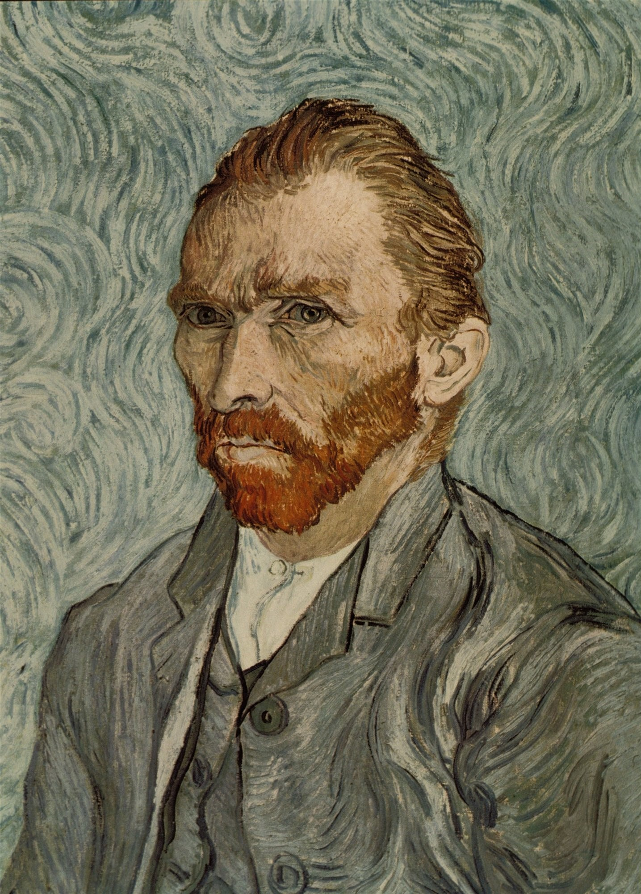
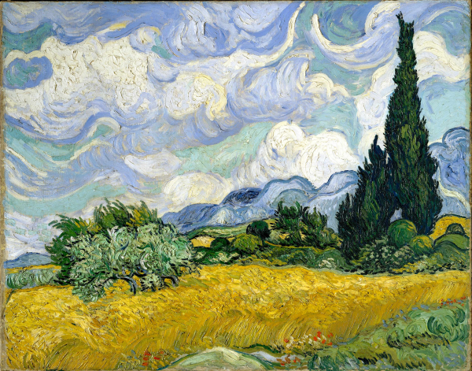
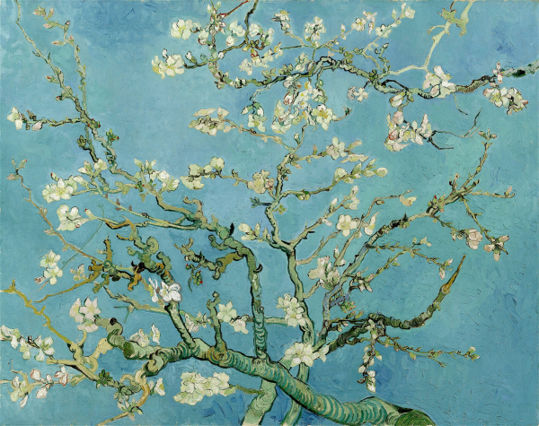

¿Por qué Vincent Van Gogh no es considerado un impresionista?

Vincent Van Gogh:
Vincent Van Gogh no se consideraba un artista impresionista, aunque fue influenciado por el impresionismo y compartió algunos elementos del movimiento. Van Gogh es generalmente clasificado como un postimpresionista, una corriente artística que surgió después del impresionismo y que evolucionó a partir de sus principios.
Influencia del impresionismo en Van Gogh
Durante su tiempo en París (1886-1888), Van Gogh entró en contacto con artistas impresionistas como Claude Monet, Camille Pissarro y Edgar Degas, entre otros. El impresionismo influyó en su uso del color y la luz, alejándolo de la paleta oscura de sus primeras obras. A través de su convivencia con artistas impresionistas y neoimpresionistas (como Georges Seurat), Van Gogh adoptó colores más brillantes y técnicas como las pinceladas sueltas y el uso de colores no mezclados.
Diferencias clave con el impresionismo
Aunque Van Gogh compartió algunos de los enfoques visuales del impresionismo, su estilo fue más expresivo y emocional, lo que lo distingue de los impresionistas. Los impresionistas buscaban capturar impresiones fugaces de la realidad, basándose principalmente en la observación directa de la naturaleza y la luz. Van Gogh, en cambio, utilizó el color y la forma para expresar sus emociones y su visión subjetiva del mundo.
Uso del color:
Van Gogh fue más radical en su uso del color. Mientras que
los
impresionistas
trataban de reproducir fielmente los efectos de la luz natural, Van Gogh usaba colores
brillantes y contrastantes para transmitir sus emociones y estados de ánimo.
Pinceladas más expresivas:
Los impresionistas también usaban pinceladas
sueltas, Van
Gogh llevó este enfoque a otro nivel. Sus pinceladas eran más marcadas, gruesas y cargadas de
intensidad emocional, como se ve en obras como "La noche estrellada" (1889) o "Los girasoles"
(1888).
Énfasis en la subjetividad:
El impresionismo se enfocaba en captar la
realidad
tal como se
veía, mientras que el postimpresionismo, con Van Gogh como uno de sus representantes
principales, se centraba más en la percepción interna del artista. Van Gogh pintaba no solo lo
que veía, sino cómo lo sentía, lo que lo llevó a distorsionar formas y colores en función de su
experiencia emocional.
Postimpresionismo y Van Gogh
El postimpresionismo, donde se enmarca Van Gogh, es un movimiento que surgió en reacción al impresionismo, y aunque mantuvo algunas de sus técnicas, los postimpresionistas buscaron explorar más allá de la captura visual instantánea de los impresionistas. Este movimiento incluía a otros artistas como Paul Gauguin, Georges Seurat y Paul Cézanne, y estaba marcado por un enfoque más simbólico, estructural o expresivo. Por tanto, aunque Van Gogh no es considerado un impresionista, su obra y su evolución artística están profundamente ligadas al impacto del impresionismo, que influyó en su técnica, pero no en su enfoque profundamente emocional y subjetivo. Pantano con nenúfares es un dibujo de Vincent van Gogh. Fue realizado en Etten (actualmente Etten-Leur) en junio de 1881. Inspirado en Monet.
 